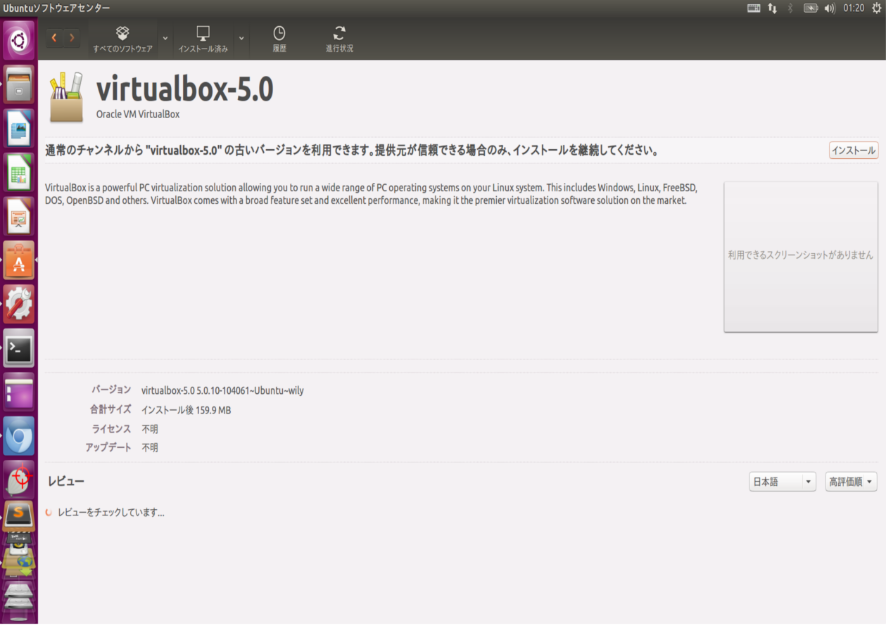

ubuntu15.10にVirtualbox パッケージダウンロードとインストール
VirtualBoxをダウンロード
vartiualboxについては
ここをクリック
Virtualboxを
ここからダウンロード
公開鍵入手とインストール
ダウンロードリンクからThe Oracle public key for apt-secure can be downloaded here. You can add this key with のhereをクリックし公開鍵ファイルを入手 ダウンロードしたファイルはホームディレクトリに置きsudo apt-key add ファイル名 を実行。 ダウンロードしたパッケージファイル virtualbox-4.1_4.1.8-754676-Ubuntu-oneiric_i386.deb をダブルクリックして、ソフトウェアセンターを開き、インストールをクリックしてインストールする。
Unity ランチャーの Dash ホームを開き、アプリケーションの検索で VirtualBox を検索しアイコンをクリックすると VirtualBox 管理画面が起動
リポジトリ追加
より新しい版を手に入れるといった操作を進める際，パッケージ管理システムにリポジトリを登録することで，ソフトウエア・パッケージの格納位置を意識することなく，ソフトウエアを導入・更新できる。パッケージ管理システムに複数のリポジトリを登録しておくことで，正式版，安定版以外のソフトウエア・パッケージを入手できる。
/etc/apt/sources.listファイルをエディタで編集し deb http://download.virtualbox.org/virtualbox/debian vivid contrib を追加。画像ではsublimetextを使用
GUIのシステム設定でソフトウェアとアップデートのアイコンをクリックし他のソフトウェアダブで追加をクリックし、APTラインの入力ボックスにdeb http://download.virtualbox.org/virtualbox/debian vivid contrib を追加。